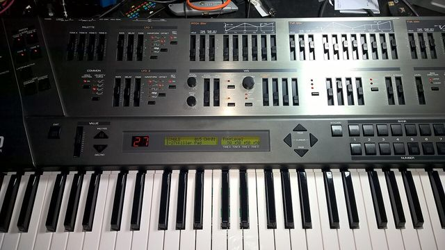

Scheda 064 · 1991 · Giappone e Los Angeles
Roland JD-800
Otto anni di menu dopo il DX7, Roland rimette i cursori su un synth digitale
108 forme d'onda campionate a 44,1 kHz, 24 voci, 4 strati per suono e un pannello che sembra il banco di un mixer.
Il suono vero · 0:44
Un JD-800 vero, nel 2005: un pad ambient programmato da chi l'ha registrato, in mono e a bassa risoluzione.
0:00 / 0:44
Registrazione di fectoper · CC BY 4.0 · Freesound · estratto di 44 s, volume normalizzato
- USCITA
- 1991
- VOCI
- 24
- FORME D'ONDA
- 108
- PREZZO UK
- 1.699 £
La macchinaChe cos'è
Sul pannello, le file di cursori grigi muovono tutte il suono: inviluppi, filtro, i due LFO, il volume di ognuno dei 4 strati. Nel 1991 un synth digitale si programmava con una rotella e un display di due righe, pagina dopo pagina, e la stessa Roland li faceva così da anni. Il JD-800 dà un comando suo a 69 parametri. Secondo me è la macchina più bella da toccare di tutto il catalogo. Se ne trovate uno usato, chiedete della colla rossa. I pesi sotto i tasti erano incollati con una resina che col tempo cola sui contatti, e i tasti smettono di suonare.
Chi l'ha costruitaEric Persing
Il JD-800 è il primo prodotto Roland progettato metà in Giappone e metà a Los Angeles, in un ufficio piccolo di Culver City che è durato pochi anni. Lì Eric Persing fa tutte le 108 forme d'onda e i 64 suoni di fabbrica. In Roland è il capo dei sound designer dal 1984 al 2004, e prima aveva fatto i suoni del D-50. Uno dei suoi preset è un piano elettrico che si chiama Crystal Rhodes. Tenetelo a mente per la slide 5. Più tardi Persing ha fondato Spectrasonics, quella di Omnisphere. Su quando il JD-800 sia uscito di produzione le fonti non concordano, c'è chi scrive 1993 e chi 1996.
Come funzionaCosa c'è dentro
Il suono parte da una delle 108 forme d'onda in memoria, registrate a 44,1 kHz. Ci sono onde classiche da synth, pezzi di strumenti messi in ciclo, attacchi brevi. Poi passa in un filtro passa-basso, passa-alto o passa-banda con la risonanza, e in tre inviluppi, per l'altezza, il filtro e il volume. Questo è uno strato. Un suono ne mette insieme fino a 4, e qui c'è un conto da fare: le voci sono 24 con uno strato solo, 6 con quattro. In fondo c'è una catena di effetti con distorsione, phaser, chorus, delay e riverbero. Di analogico non c'è niente, anche se il pannello ve lo fa credere.
Chi l'ha usataNei dischi
- Prince«Love Symbol» (1992): secondo il tastierista Tommy Barbarella c'è dappertutto
- Jean-Michel Jarre«Chronologie» (1993): il JD 800 è nella lista delle macchine sul libretto
- The Prodigy«Experience» (1992), nella versione di «Fire» che sta sull'album
Da ascoltare
Prince, «Damn U» (1992)
Dentro c'è il preset Crystal Rhodes. Lo racconta Tommy Barbarella, che suonava le tastiere con Prince nei New Power Generation.
L'aneddotoUna storia
Liam Howlett dei Prodigy vende i suoi synth analogici. In un negozio prova un JD-800, gli sembra che abbia la sensazione dell'analogico e lo compra. A casa, racconta, entro una settimana sa che non gli piace. Fa in tempo a usarlo nella versione di «Fire» che sta sull'album, e a Future Music dice che per i bassi è buono, per via dell'enhancer. Poi lo scambia con un Jupiter-8, che quando rilascia l'intervista si è già rotto. Un anno dopo aver dato via il JD-800 si compra il JD-990, la versione da rack, senza cursori.
Avvertenze
Richiamato un suono, i cursori restano dove li avevate lasciati. Toccatene uno e il valore salta lì di colpo, anche con la nota tenuta.
Il reel
La versione corta
Le cose da sapere in fila, una schermata alla volta, col suono della macchina quando ne esiste una registrazione libera. Aprilo su Instagram ↗
Il carosello
Le 6 tavole
Da dove viene
Fonti
- «Knobular Synthesis» — Sound On Sound, aprile 1991 verificata il 2026-10-20
- «Roland JD800» — Music Technology, giugno 1991 verificata il 2026-10-20
- «The History of Roland, Part 3» — Sound On Sound, 2005 verificata il 2026-10-20
- «Roland JD-800» — Wikipedia (EN) verificata il 2026-10-20
- «Eric Persing and the JD-800» — Roland, 2021 verificata il 2026-10-20
- «Prince e il JD-800» — Roland, 2021 verificata il 2026-10-20
- «Roland JD-800» — Guitarcloud (Prince) verificata il 2026-10-20
- Liam Howlett — Future Music, febbraio 1993 verificata il 2026-10-20
- Liam Howlett — Sound On Sound, 1996 verificata il 2026-10-20
- «Roland JD-800» — Polynominal (la resina rossa) verificata il 2026-10-20
Foto: Pete Brown · CC BY 2.0 · Wikimedia Commons
Foto nelle tavole: Pete Brown · CC BY 2.0 · Wikimedia Commons
Foto nelle tavole: Pete Brown · CC BY 2.0 · Wikimedia Commons
Foto nelle tavole: Pete Brown · CC BY 2.0 · Wikimedia Commons
Suono: Registrazione di fectoper · CC BY 4.0 · Freesound · estratto di 44 s, volume normalizzato